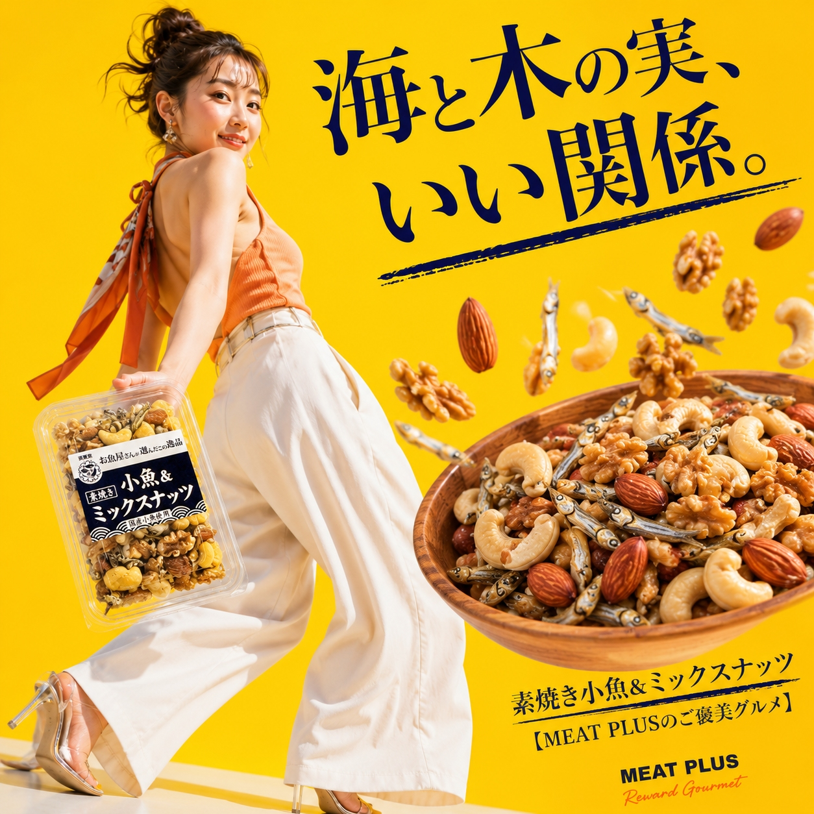
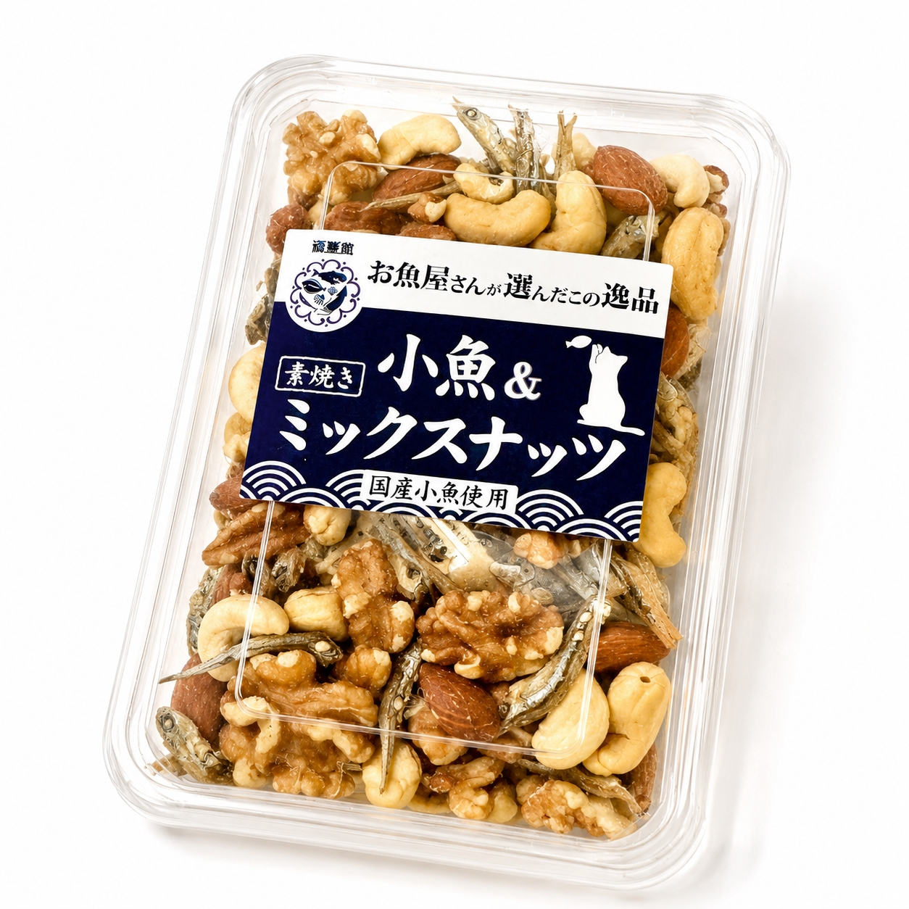
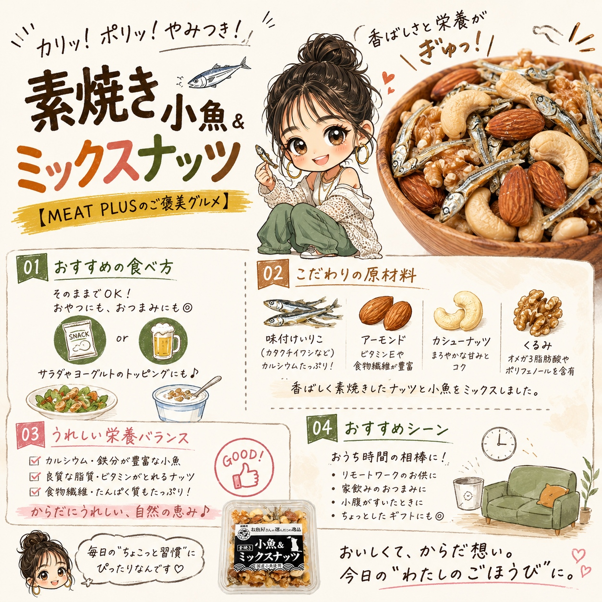

SCENE 01

k スイーツ・菓子
素焼き小魚＆ミックスナッツ
【商品名案】 1. 素焼き小魚＆ミックスナッツ 90g 国産 小魚アーモンド くるみ カシューナッツ おやつ おつまみ カルシウム 健康 ヘルシー 2. 【からだ想いの健康おやつ】 国産小魚と3種の素焼きミックスナッツ 90g カルシウムたっぷり おつまみ 間食に 3. パリポリ食感がやみつきに！ほんのり甘い小魚と香ばしミックスナッツ 90g お子様のおやつに 大人のヘルシーな間食にも 【キャッチコピー】 【ぱりぽり食感と香ばしさ。やみつきになる健康おやつ。】 【商品説明文】 ちょっと小腹が空いた時、ついつい甘いものに手が伸びていませんか？そんな毎日のひとときに、からだ想いの美味しいおやつはいかがでしょうか。国産のカタクチイワシなどを香ばしく焼き上げ、ほんのり甘じょっぱく味付けした小魚。そこに、食塩や油を使わずに素焼きにしたアーモンド、カシューナッツ、クルミを絶妙なバランスでミックスしました。小魚のぱりぽりとした食感と、ナッツのカリッとした歯ごたえ、そしてそれぞれの素材が持つ自然な風味が口いっぱいに広がります。カルシウム豊富な小魚と、ビタミンや食物繊維が嬉しいナッツの組み合わせは、お子様のおやつはもちろん、大人のおつまみや、仕事の合間のヘルシーな間食にもぴったりです。今日の休憩時間は、この素焼き小魚＆ミックスナッツで、美味しく賢く栄養補給。心もからだも満たされるひとときをお過ごしください。 【おススメポイント】 ・【絶妙な甘じょっぱさ】ほんのり甘く味付けした国産小魚と、食塩・油不使用で香ばしい3種の素焼きナッツ（アーモンド、カシューナッツ、クルミ）をバランス良く配合しました。 ・【飽きのこない食感】小魚のぱりぽり感と、ナッツのカリッとした歯ごたえが楽しい、ついつい手が伸びる美味しさです。 ・【からだ想いのおやつ】育ち盛りのお子様のカルシウム補給に。大人のヘルシーな間食やお酒のお供にも最適です。 ・【便利な食べきりサイズ】湿気にくく、持ち運びにも便利な90gパック。いつでも開けたての風味をお楽しみいただけます。 【FAQ】 1. ナッツは食塩不使用ですか？ はい、アーモンド、カシューナッツ、クルミは食塩や油を使用せずに素焼きにしております。小魚には味付けのために食塩や砂糖などを使用しております。 2. 子供でも食べられますか？ はい、多くのお子様にもおやつとしてお召し上がりいただいております。ナッツ類は硬さがありますので、小さなお子様の場合は、のどに詰まらせないよう保護者の方がそばで見守りながら、少量ずつ与えてあげてください。 【お客様への一言】 私たちは、お届けする商品を通して、毎日の食卓を少し豊かにし、ご家族や大切な方と幸せで楽しい食事の時間を過ごしていただくお手伝いができればと願っています。この「素焼き小魚＆ミックスナッツ」が、心ほどける楽しいひとときにつながれば幸いです。 【商品情報】 商品名: 素焼き小魚＆ミックスナッツ 商品規格: 90g/p 原材料: 味付けいりこ（煮干し魚類（カタクチイワシ、キビナゴ、ウルメイワシ）、食塩）、砂糖、でんぷん分解物、ごま、カップリングシュガー、食塩）（国内製造）、素焼きアーモンド（アーモンド）、素焼きカシューナッツ（カシューナッツ）、素焼きクルミ（くるみ）、（一部にアーモンド・カシューナッツ・くるみ・ごまを含む） 原産国: 日本 製造地: 日本 賞味期限: 発送日より3ヶ月
公式サイトへ移動します。価格・在庫・配送条件は移動先で最終確認してください。


PRODUCT INFORMATION
味付けいりこ（煮干し魚類（カタクチイワシ、キビナゴ、ウルメイワシ）、食塩）、砂糖、でんぷん分解物、ごま、カップリングシュガー、食塩）（国内製造）、素焼きアーモンド（アーモンド）、素焼きカシューナッツ（カシューナッツ）、素焼きクルミ（くるみ）、（一部にアーモンド・カシューナッツ・くるみ・ごまを含む）
MEAT PLUS OFFICIAL SHOP
仕入れ・加工・梱包・発送まで自社で行うMEAT PLUSの公式オンラインショップでご注文いただけます。
公式オンラインショップで購入する